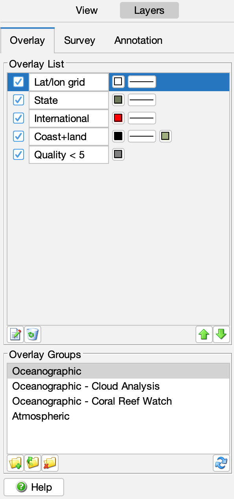
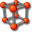
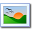
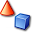
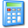

CoastWatch Data Analysis Tool Help: Geographic and mask overlays
In this section:
What are overlays?
CDAT uses data overlays to help give context to the data view. An
overlay can show where latitude and longitude lines fall, where
physical boundaries such as coastline, political borders, and
bathymetric contours lie, and can also mask off certain parts of the
view so that only the relevant data is visible.
Adding an overlay to the view
The following figure shows the current overlays and the saved overlay
groups:

You can add one of several types of overlays to the data view
using the CDAT toolbar buttons as follows:
- Coastlines
- Land/water boundaries derived from Global
Self-consistent Hierarchical High-resolution Shorelines (GSHHS)
data: http://www.ngdc.noaa.gov/mgg/shorelines/gshhs.html.
- Latitude / longitude grid
- Latitude and longitude grid lines with labels. By default, the
grid spacing adapts to the view, but can be set manually.
-  Row / column grid
- Data row and column grid lines with labels.
- Country and state borders
- Lines are derived from CIA WDB-II data. By default, only international
borders are shown — state borders can be added manually by editing
the overlay.
-  Topographic and bathymetric contours
- Contour data is computed from ETOPO5
elevation data: https://www.ngdc.noaa.gov/mgg/global/etopo5.HTML. By
default, only the 200 m and 2000 m bathymetric contours
are shown, but the overlay can be modified to include any set of
topographic or bathymetric contours.
-  Shape files
- Line and polygon data stored in ESRI shapefile format or simple text
files with lists of lat/lon values.
Currently, shapefile support is limited: point data cannot be
displayed, shape overlays cannot be saved to an overlay group, and
shapefile rendering may be slow for large shapefiles.
- Single layer bitmask
- A single-color mask that uses a data variable and integer
mask value to mask certain data pixels that contain the same
bits as the mask value. For example, a bitmask can be used to
mask clouds as gray.
- Multilayer bitmask
- A multiple-color mask that uses a data variable and color
for each bit to mask certain data pixels that contain the bit
values with the corresponding color. For example, a multilayer
mask can be used to analyze the detailed output of a cloud
masking algorithm.
-  Expression Mask
- A single-color mask that uses a mathematical expression and
color for each bit to mask certain data pixels for which the
result of the expression is true. An expression mask is slower
to compute than a bitmask or multilayer, but is much more
flexible. See the User's Guide cwmath command for the syntax
of the expressions. Only variables imported when the data was
opened can be used in the expression.
Overlay list
Once added to the list, overlays can be edited, renamed, set
visible or invisible, moved up or down in the list, and removed.
To edit an overlay's properties, double-click the overlay in the
list or select the overlay and click the
Edit button.
You can change simple line properties
such as color and thickness directly from the list. To rename an
overlay, edit the overlay's name text field. Overlay visibility
can be changed by checking or unchecking the visibility box on
the left. The overlay list represents a vertical stack and
overlays are rendered in order from bottom to top. You can use
the
Move Up and
Move Down
buttons to rearrange the overlay stacking order.
Finally, you can remove overlays by selecting a set of overlays
from the list using Ctrl-click (⌘-click on the Mac) or
Shift-click, and clicking
Remove.
Overlay groups
Overlay groups are a convenient way of saving a set of
overlays to be used later. Create a new overlay group using the
Create button,
selecting the overlays to save to the group, and then entering a group name.
Click the
Load button
to load an overlay group or just double-click on the group name.
The overlays are restored with the same properties they had when saved,
and stacked on top of any other overlays already in the list. Delete an overlay group by
clicking
Delete.
CDAT comes with a default set of overlay groups that you may find
useful; see the preferences and
resources section for more on where overlay groups are stored and other
things you can do with them. If you make a mistake and delete or modify these default groups, you can click
Restore
to recover them.
← Back to overview